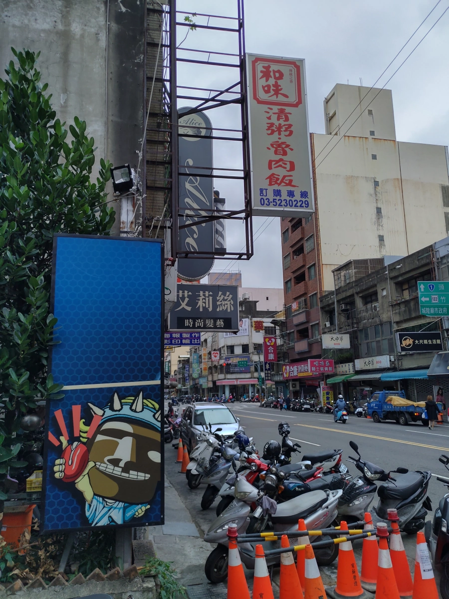

[新竹] 和味精緻自助餐 林森店
| 餐廳名稱: | 和味精緻自助餐 林森店 |
|---|---|
| 地 址: | 新竹市林森路221號 |
| 營業時間: | 週日~週五 10:00~14:00 16:30~21:00 |
| 每週六公休 | |
| 電 話: | 03 523 0229 |
新竹市聽說 鳳仙清粥小菜 跟 和味清粥小菜 開很久了，很出名。而 和味 開枝散葉，除了清粥小菜，還有兩間自助餐，不過清粥小菜也算是自助餐。
- 和味小吃店 長安街36號 ，Google 4.1 分，老店，清粥小菜。
- 和味精緻自助餐 林森路221號，Google 3.6 分，自助餐。
- 和味風味館 竹光路223號，Google 3.3 分，自助餐。
其實自助餐通常都低分，店家沒在管分數，不找網軍去灌水，薄利多銷的經營方式，服務態度自然是普通。最重要的是，算錢自由心證， 這個時代很少佛心店家，大家都是要養家活口的，很容易就覺得算貴了。
今天跑新竹國泰醫院，從國泰醫院停車場後門巷子直走，就斜接到林森路，正好就是和味精緻自助餐 林森店，下圖就是和味招牌，走過來時 早就看到了。 
正面招牌，主打50元便當，加一個菜多10元。可是右邊第二個 朴招飯 是什麼啊? 回來上網查，感謝 驛長手札 的文章，原來 朴菜=福菜=梅乾菜=鹹菜，客家人稱之朴菜，普遍叫做 梅干菜，梅干扣肉的梅干菜。這倒是挺特殊了。
如果是便當，就是由工作人員打菜，畢竟價格訂在50元，加一個菜10元，份量由工作人員處理。
如果是內用，則是自己打菜，結帳櫃台再吩咐飯或湯，牆壁上有列幾種湯如 苦瓜排骨湯，香菇雞肉湯等共四種。飯 有 白飯、滷肉飯、卜菜肉飯等。 然後櫃台人員再算錢。

第一次吃:
雖然Google分數低，客人還是挺多的，兵荒馬亂。趕快挑幾樣可吃的，然後小碗滷肉飯，這樣 95 元。 炸排骨據說是 35 元，小碗滷肉飯 30 元，一道菜10元。 分開來看，似乎也沒什麼問題，合在一起變 95 元感覺又稍多一點，竹北東大排骨便當 85 元，4個小份量的菜，那又是如何做到的呢。顯然每樣小東西差一、兩元， 好幾樣就累積10幾元，做小吃真的是要斤斤計較。
因為是自己選的菜，每樣都覺得好吃。炸排骨很輕微的甜，我能接受，不錯吃。玉米、白菜 鹹度正常，蛋正常。滷肉飯一樣是輕微的甜，醬汁很足夠，大概每粒米都能沾到醬汁，絞肉鹹香， 有些滷肉飯醬汁不夠，吃到後來變白飯，那種很討厭。
2019/Nov/xx Update:
當天 算錢的阿姨換成一個高壯的婦女，一樣是排骨、三菜，小碗滷肉飯，竟然變成 110 元。算了，自助餐常見日常。 忘了拍照，日期也忘了。
2019/Nov/26 Update:
12點剛出頭時到達，是尖峰時刻，客人很多，不過我吃完約12點半，客人就少了，畢竟一般公司是12點放人出來。 當天 算錢的阿姨 換回常見的那位。 試試小碗卜菜肉飯，蛋是菜圃蛋。玉米沒變。剩下一道菜選茄子，通常外面餐廳很大的火才能夠把茄子煮得好吃。 乖乖….竟然80元。牆壁上菜單，卜菜肉飯 跟 滷肉飯 根本價格一樣。兩次的蛋應該價格差不多吧。價格變化成這樣，我其實也沒那麼在意， 我是當成社會實驗的笑話 紀錄每一次。新竹國泰停車費一小時就花我40元了，我一次還停兩小時以上，食物的十幾塊錢，沒什麼好計較的。
卜菜肉飯 就是 梅干扣肉的味道，但味道輕很多。卜菜肉飯的肉是滷肉飯的那種絞肉，梅干菜也切的細細的。這種氣味重的，通常沒吃過的會不愛，吃很多次，習慣了，才會覺得好吃。 反正不愛梅干扣肉的人，可以選比較普及的滷肉飯。不過 竹北 張三桌 的梅干肉冷凍調理包更優秀一點，自己煮白飯，淋上這個梅干肉， 比這邊的卜菜肉飯好吃。 炸排骨一樣微甜，三道菜鹹度正常。
如果擔心價格高高低低，其實可以跟工作人員說好固定價格便當，例如 70元的滷排骨飯，然後選菜，由工作人員打菜，這樣價格就固定了。
和味精緻自助餐林森店 其實就是簡單便宜解決一餐而已，裝潢、服務都不要想，有基本程度就好。如果順道經過，還是願意去吃。總店清粥小菜也想找機會去試試。